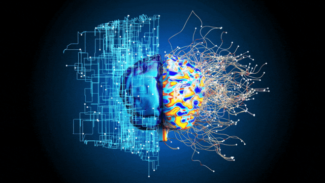
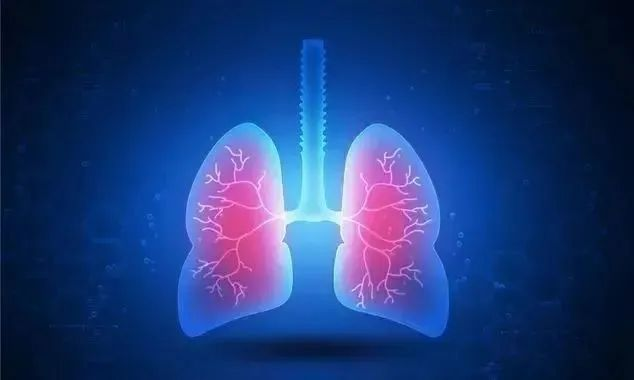
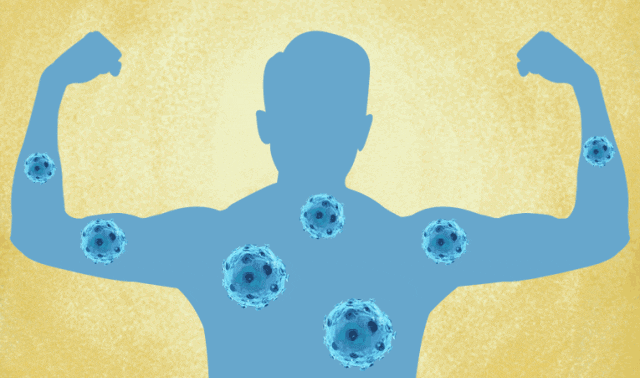
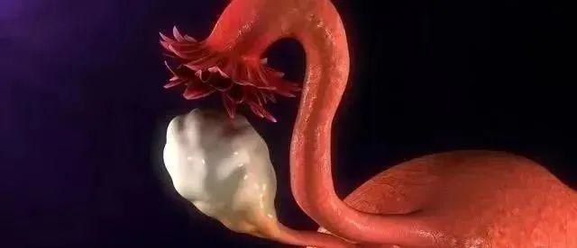

About Us
关于百年春
总而言之，衰老的根本原因是新生细胞的数量不足以完全替换衰老或死亡细胞，从而导致人体细胞总数变少（身体萎缩）、活力下降（衰老症状）。归根结底是自身干细胞的数量变少导致再生能力下降引起。
目前，最科学有效的方法就是从源头、从机体内部“延缓”生命衰老的进程，阻止“衰老加速度”效应。这就是干细胞抗衰老技术。
干细胞技术能延缓人类衰老速度
在现代抗衰老研究进程中，干细胞技术始终占据重要地位，受到全球科学家的密切关注，承载着全人类抗衰老的美好梦想。
干细胞抗衰老的原理
01组织修复作用
在衰老过程中，很多组织器官都会受到损伤，从而导致组织结构的不完整和功能的退化或丧失。体外静脉回输间充质干细胞，或者局部定点注射间充质干细胞，可以通过“归巢效应”，让间充质干细胞迁移至受损部位，修复、替代损伤细胞，大大增加组织再生的能力。
02代谢调控作用
长寿和抗衰老的一个关键因素是消化好，代谢能力强。除了日常生活中通过控制饮食减轻代谢负担，也可以通过干细胞的帮助增强代谢功能。间充质干细胞就具有这样的功能，它能够分泌大量的细胞因子，调节胰岛细胞，促进糖脂代谢等
03免疫调节作用
衰老过程中的损伤和修复，是一个动态过程，损伤都会有炎症的发生，干细胞在炎症修复中发挥了重要的作用。间充质干细胞具有的低免疫原性和免疫调节的特性，通过再生和分泌细胞因子，来对抗炎症，修复炎症。
干细胞会给你的身体带来哪些变化？
1
脑部功能年轻化

修复损伤，提高机体适应性。人到中年后，随着脑神经细胞逐渐减少（25岁以后年减少约0.8%，到了70岁时脑神经只剩下55%），综合功能将明显减退。中老年人一般会出现记忆力、智力、认知力衰退，乃至出现痴呆等症状。
自体活性神经干细胞回输后，可分化形成新的神经细胞，为大脑提供全新细胞源，有效改善脑衰老状况。尤其对老年性痴呆患者的记忆力、智力有明显改善和恢复。
2
心脏功能年轻化
修复损伤，改善脏器内部环境，提高生命活力。心脏自身干细胞具有心脏组织分化能力。通过使用SDF-1蛋白可诱导、促进干细胞向心脏靶向归巢，将干细胞整合至损伤心肌，促进心脏前体细胞的分化，进而促进血管新生和改善心脏功能，提高心脏自我修复潜力。使用Urantide阻断UrotensinⅡ受体能够通过增加心脏侧群细胞提高心脏修复能力，使活力心脏面积增加，局部心肌收缩功能改善。
3
肝脏功能年轻化
修复损伤，改善功能，提高机体适应性。肝脏干细胞具有肝脏组织分化能力。随着干细胞向肝脏靶向归巢，活性肝脏干细胞将发挥合成、解毒和促进胆红素排泄（或胆红素、转氨酶下降）等作用，使白蛋白、血清PIIIP、血清肝细胞生长因子水平明显提高，延缓或阻止肝纤维化的发生。通过肝细胞的再生和体液分子机制作用恢复肝脏的正常功能，保持肝脏年轻化。
4
肺部功能年轻化

修复损伤，改善肺部功能。肺干细胞具有肝脏组织分化能力。通过干细胞向肺部靶向归巢，一方面活性肺干细胞将替代、修复受损细胞；另一方面干细胞生成新的肺细胞，为肺纤维化后肺组织损伤修复和肺功能恢复奠定基础。
肺部组织（肺泡、肺部血管等）再生的过速度超过外界刺激物和内部病变因素所引起的破坏性炎症的发展速度，再生组织系统对各种炎症的产生形成抑制作用，防止、遏制、消除肺纤维化，进而使肺部组织保持良好的稳定状态，肺功能得以维持健康态、年轻化。
5
肾脏功能年轻化
修复损伤，改善肾功能，强化命源能力。肾脏干细胞靶向归巢后到达肾脏病灶，通过改善肾脏局部微循环，恢复正常细胞代谢，为肾脏创建新的有氧环境，缓解肾脏缺血、缺氧引发的衰竭症状，从而实现对受损固有细胞的修复和脏器组织重建。
同时，肾脏干细胞通过组织分化、再生功能形成新的胰岛细胞来修复胰腺，使患者的血糖逐渐得到调整，并不断向正常指标回归，增强对肾脏的保护。
6
骨关节功能年轻化
修复损伤，改善功能。骨关节一旦损伤很难修复，将导致不可逆性的关节退变和骨关节疾病形成。
干细胞在体内或体外特定的诱导条件下，可分化为骨、软骨、肌肉、肌腱、韧带、神经、 肝、心肌、内皮、脂肪等多种组织细胞。作为种子细胞可用于因衰老或病变引起的组织器官损伤修复。
干细胞移植技术可以直接补充减少的干细胞并发挥其活性，促进局部病变骨组织的修复。产生软骨基质或新骨组织，具有促进骨缺损修复的能力。
7
免疫功能抗衰老

提高肌体免疫力，增强抵抗疾病能力。免疫功能衰退是整体衰老的重要标志。免疫是人体抵抗疾病，尤其是清除进入人体的病原微生物(细菌、病菌、寄生虫等)和监控、杀灭肿瘤细胞的关键因素。衰老导致免疫细胞减少、活性降低，导致抗病能力下降，因而容易发生肿瘤和其它疾病。外源性干细胞植入后可以重新建立造血免疫系统，恢复正常免疫功能。
8
卵巢功能年轻化

修复损伤，改善功能，提高机体适应性。卵巢是女性生殖和重要的内分泌器官，是保证女性生活质量的重要保障。卵巢早衰是指女性40岁前由于卵巢内卵泡耗竭或因医源性损伤而发生的卵巢功能衰竭。表现为经量减少、无排卵、黄体功能不足、阴道干涩、性欲下降等绝经症状。
干细胞卵巢保健（功能年轻化），是通过间充质干细胞诱导分化（“微环境诱导分化”）出再生卵巢组织，进而使已经坏死衰竭的卵巢重新生成新的卵巢，进而维持卵巢的正常形态，防止卵巢萎缩变形,恢复卵巢的功能，达到改善生理功能、提高生活质量提高的目的。
9
男性功能年轻化
修复损伤，改善功能，提高机体适应性。干细胞具有生殖系统退行性衰老阻止、提高肾脏活力和激活性功能的作用。能使男性的性功能得到明显改善，使性频率和性生活满意程度显著提高。干细胞性保健是恢复性功能最为安全、健康、显效、持久的方法。
未来展望：虽然目前人类还无法完全终止衰老进程，但科学家们已经找到了延缓衰老的方法，可以通过补充活力干细胞，让衰老进程慢下来，让衰老状态有所逆转和改善。在未来，延寿驻颜有望从少数人的幸运走向大部分人的常态，让我们拭目以待。
上一篇：
下一篇：
年后肝"负重"？百年春护肝美颜能量抗衰老针——给肝"松绑"，让脸发光！
2026-03-01
自体干细胞逆转高血脂，重启健康代谢！
2026-01-12
生殖干细胞
2025-12-10
强直性脊柱炎
2025-12-01
间充质干细胞
2025-11-14